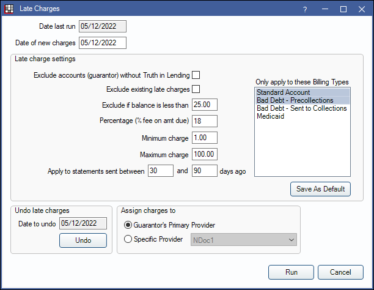
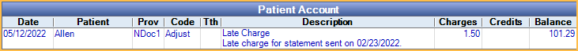
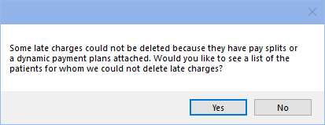

Late Charges
The Late Charges tool is an alternative to the Billing/Finance Charges tool. It is used to apply late charge adjustments to accounts with statements that have an unpaid balance.
In the Main Menu, click Tools, Late Charges.
The charge amount is calculated based on the current remaining patient portion of production items on statements sent between a set number of days. The charges will post to the accounts of all guarantors and super family head's that meet the filtering criteria.
Setup Requirements:
- In Show Features, check the radio button to enable the Late Charge feature. Once enabled, Late Charges will be available in the Tools menu.
- Set the Late Charge adjustment type in Preferences.
Date last run: The date on the previously posted late charge adjustments.
Date of new charges: Enter the date the new charges should be applied. Defaults to today's date.
Exclude accounts (guarantor) without Truth in Lending: Check to exclude families that do not have a signed Truth in Lending agreement on record (Edit Patient Information: Other Tab). For super family statements, this only applies to the super family head.
Exclude existing late charges: Check to exclude statement balances that already have late charges.
Exclude if balance is less than: Do not generate late charges for families that have a balance less than or equal to this set amount (after insurance estimates).
Percentage (% fee on amt due): Set the percent of the late charge fee. The percent applies to the current remaining balance of production items on statements that meet the late charge criteria. Set to zero or leave blank to apply a flat fee (see Minimum charge).
Minimum charge: Set the minimum late charge amount. For example, if set to $5.00, any late charge amount calculated from $0.01 to $4.99 will be charged as $5.00. Alternatively, this can be used to apply a flat fee when the Percentage is set to zero or left blank.
Maximum charge: Set the maximum late charge amount. For example, if set to $15.00, any late charge amount calculated as $15.01 and over will be charged as $15.00.
Apply to statements sent between: Set the number of days to consider late charges. Late charges are calculated based on the unpaid balances of the production items on statements sent on or between this set number of days. If a patient does not have a sent statement within this range, no late charge adjustment is applied to the account.
- Late charges are not calculated on In-Person (walkout) Statements, Invoices, Receipts, statements marked as "(unsent)", and sent statements missing the Image Module PDF. However, they are calculated on Electronic Statements when the Billing Defaults option, Generate PDF is unchecked.
- If a family has multiple statements sent in the set range and with the same production items, late charges will only be applied once for each item.
Only apply to these Billing Types: Select the billing types to apply the late charges. The charge is only applied if the guarantor of the family has one of the selected types.
Save As Default: Save the selected Late Charge Settings as default.
Assign charges to: Select how the default provider is assigned to the late charge adjustment.
- Guarantor's Primary Provider: Check to assign the primary provider of the family's guarantor to the late charge adjustment.
- Specific Provider: Select a specific provider to assign to the late charge adjustment.
Click Run to apply late charges to all included accounts. The late charge adjustment will post to the guarantors account with a note listing the statement date the charge was calculated for.
Undo Late Charges
To remove the most recent late charges, click Undo. All adjustments made on the same date, with the same late charge adjustment type, will be deleted. To undo late charges for a different date, users must manually go into each account and delete the individual adjustments. Use the Daily Adjustments Report to identify accounts with adjustments made on that date.
Late charge adjustments attached to a payment or dynamic payment plan cannot be deleted with this tool. To view a list of patients with late charge adjustments that cannot be deleted, click Yes when prompted.
Go to each patient on the list and manually detach the adjustment from pay splits or dynamic payment plans to delete the adjustment, if needed.